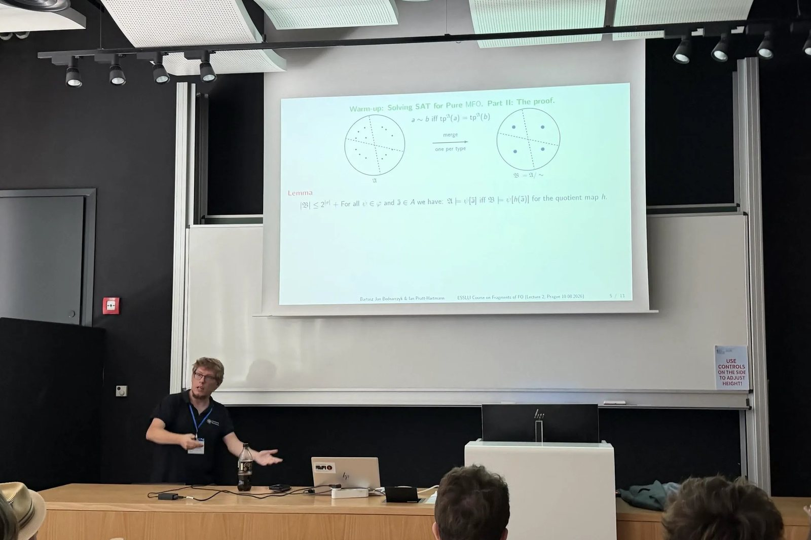
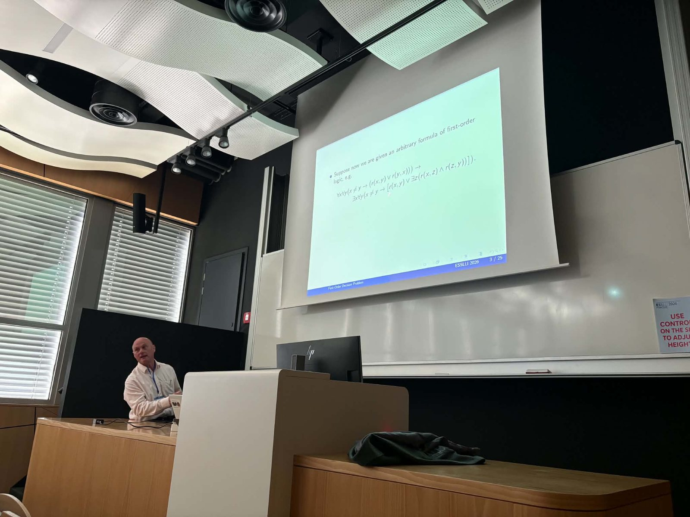

Lecture 1: Introduction
Ian Pratt-Hartmann
The classical decision problem for first-order logic and a map of the course.
ESSLLI 2026 course · Prague · 10–14 August 2026
Bartosz Bednarczyk TU Wien & University of Wrocław
Ian Pratt-Hartmann University of Manchester & University of Opole


The classical decision problem for first-order logic asks whether a given sentence of first-order logic is satisfiable, i.e. whether it is true in some structure. While this problem is undecidable for first-order logic as a whole, its restrictions to certain fragments of first-order logic are known to admit of an effective solution. One of the central goals of research in mathematical logic in recent decades has been to determine the decidability and complexity of this problem for different fragments of first-order logic.
This course surveys major decidable fragments of first-order logic, including the two-variable, guarded, and fluted fragments, along with their extensions with counting quantifiers. These logics present different challenges, often requiring specialized techniques such as reduction to integer programming, small model constructions, tree decompositions, variable elimination, and reduction to tiling problems. We provide a comprehensive treatment of these techniques and briefly survey some open problems.
Ian Pratt-Hartmann Bartosz Bednarczyk
Ian Pratt-Hartmann
FO², the fragment of first-order logic with at most two variables.
Bartosz Bednarczyk
Guards turn global search into local search: satisfiability and finite satisfiability of GF² are ExpTime-complete.